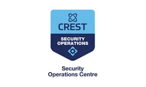
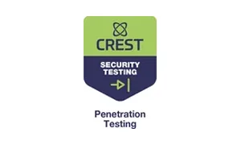
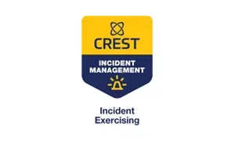
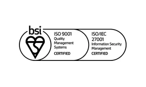
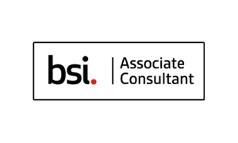
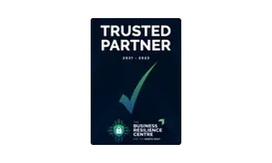
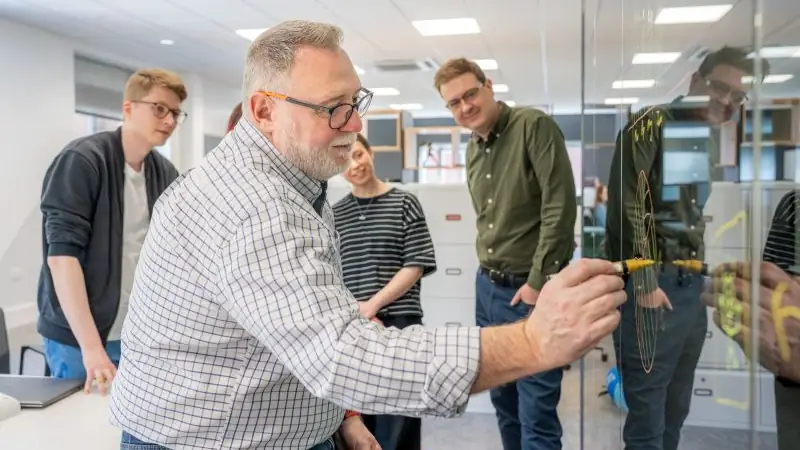
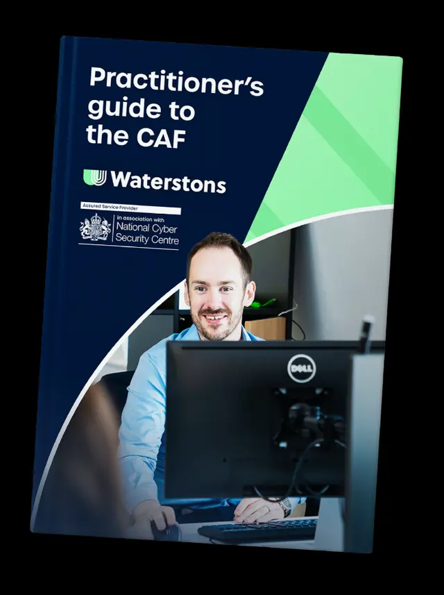

Keeping the bad guys out, without getting in your way.
24/7 CREST certified Security Operations Centre, assured by the NCSC, BSI and CREST.
- Cyber strategy We have sat in the CISO seat. A roadmap that fits your goals and your regulatory reality.
- Fractional security roles Senior expertise without the overhead. Security manager or vCISO, shaped around what you need.
- Managed detection and response Round the clock monitoring through our CREST certified SOC, with XDR, SIEM and threat intelligence.
- CAF audit and assurance NCSC approved cyber advisor, and on the NCSC Cyber Resilience Audit scheme.
- Cyber Essentials and ISO 27001 We find the gaps, help you fix them, then give independent assurance from our own assessors.
- Penetration testing Real world attack simulations across applications, networks, systems and physical premises.
Proof
"Waterstons worked side by side with us like one of the team."
Accredited
Independently checked, not self declared.






Nine marks, each issued by a body that audits us rather than takes our word for it.
Inside
Meet the people who would pick up the phone.
Two minutes inside our Security Operations Centre, with the team who would actually be on the other end of an incident call. No stock footage, no actors.

Sectors
- Energy Critical national infrastructure means the CAF, operational technology you cannot simply patch on a Tuesday, and regulators who expect evidence rather than intent.
- Housing Tenant data, a wide supplier base, and services people rely on to keep a roof over their heads. Resilience here is a duty of care, not an IT project.
- Education Open networks, research data, and funders who increasingly ask for certification. We took Queen Mary University of London through ISO 27001:2022 across its whole IT Services department.
- Manufacturing Shop floor systems that were never designed to face the internet, and a day of downtime measured in orders rather than tickets.
- Professional services Law, finance and advisory, where confidentiality is the product. We supported Burness Paull LLP on business continuity and incident response planning.
Outcomes
- An honest baseline before anything is bought
- Certification carried start to finish by our own assessors
- A team on the other end of the phone at three in the morning
- Governance that sticks in how people work, not only at audit time
Guide
Your go-to guide to the CAF.
The CAF is the NCSC's benchmark for cyber resilience. We have cut through the jargon: what it is, what it means for your business, and what to do next.

Answers
Our managed detection and response service runs 24 hours a day through our CREST certified Security Operations Centre. The team detects and triages in real time, backed by XDR and SIEM, threat intelligence and dark web scanning. When we spot something we contain it, investigate it, and give you clear steps to fix it and stop it happening again.
It depends who is asking and why. Cyber Essentials covers the technical basics and is often what a contract or a funder requires. ISO 27001 is a management system, so it proves you run security as an ongoing discipline. We support both from start to finish, with certified assessors and auditors of our own, and we will tell you honestly if you do not need the bigger one yet.
Start with an honest baseline. We are an NCSC approved cyber advisor and one of only a small number of consultancies on the NCSC Cyber Resilience Audit scheme. We will work out how ready you are for submission, where the gaps are, and what to tackle first, so you have a practical route rather than a wall of framework.
Not every organisation needs a full time security leader, but every organisation needs the thinking of one. Our fractional security roles give you senior expertise without the overhead, from hands on operational support through to strategic leadership, with governance that sticks in how people work rather than only at audit time.
No. Our accredited testers run real world attack simulations across your web applications, networks, systems and even your physical environment, then give you practical, prioritised steps to put things right. We also run Microsoft 365 security reviews, vulnerability assessments and Active Directory analysis.
Contact
Tell us what is worrying you.
You will get a reply from someone who knows the subject, not a sales sequence. If we do not think we can help, we will say so.
Or ring +44 345 094 0945